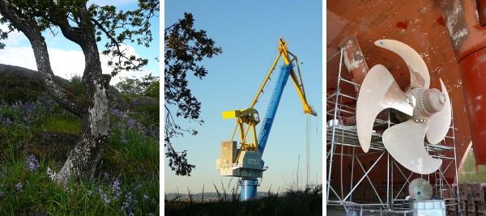

Environmental Policy Statement
It is the goal of the Esquimalt Graving Dock, in partnership with the ship repair industry, to be the premier ship repair, construction and maintenance facility on the west coast of North America.
The Esquimalt Graving Dock and its users realize that environmental management is an integral part of attaining that goal. Through the implementation of an ISO 14001 Environmental Management System, we are committed to managing the actual and potential environmental impacts of our operations.
To meet our commitment we will:
- Protect the natural environment and prevent pollution.
- Meet or exceed applicable federal, provincial and municipal legislation and regulations; uphold departmental policies; and abide by industry standards, practices and other requirements related to our identified environmental aspects.
- Establish and review our programs, objectives and targets to ensure we are meeting our environmental commitments.
- Communicate openly with our employees, users, tenants, contractors, suppliers, neighbours and other stakeholders regarding our Environmental Management System and the nature of our operations.
- Educate our employees and the users of our facility to ensure they are aware of and understand their roles and responsibilities in protecting the environment.
- Meet the evolving needs and expectations of our industry and community through the continual improvement of our systems, programs and procedures.
- Date modified: